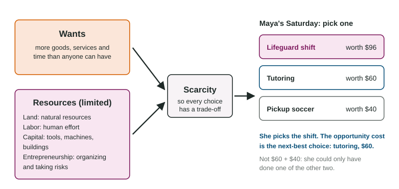

The owner of Harbor Lane Print Shop has one large press and one free Saturday. A couple wants wedding invitations, a store wants banners and a cafe wants new menus. The press can run only one job that day, so saying yes to one means saying no to the other two. That is the whole of economics in a small example: there is not enough to go around, so every choice gives something up.
Scarcity
Scarcity is the gap between unlimited wants and limited resources. People always want more goods, more services and more time than they can have, but the resources that make goods and services are limited. Because of scarcity, every person, business and government must choose how to use what it has.
Scarcity is not the same as a store running out of something for a week. It is permanent and it is everywhere. A billionaire faces it, because she still has only 24 hours in a day. A large firm faces it, because its machines, workers and money can go to only so many projects. A government faces it, because a dollar spent on a park cannot also fix a road.
The factors of production
The resources used to make goods and services are called the factors of production. There are four:
| Factor | What it is | At Juniper Ridge Bike Co. |
|---|---|---|
| Land | natural resources: ground, water, minerals, forests | the rented lot, the river water used to wash bikes |
| Labor | human effort, physical and mental | the two mechanics' repair work |
| Capital | tools, machines and buildings made to produce other goods | wrenches, a repair stand, a delivery van |
| Entrepreneurship | organizing the other factors and bearing the risk | Ana risking her savings and deciding what to offer and charge |
One common slip: money is not capital here. Money buys capital, but in economics capital means the physical tools and machines themselves. A bakery's oven is capital; the cash in its bank account is not a factor of production.
Most resources are scarce, but not every one is scarce in the same way. Using flour uses it up; using a recipe does not. Once a piece of knowledge exists, one person using it does not stop anyone else from using it, so it is not scarce in the usual sense even though creating it took effort.
Trade-offs and opportunity cost

Because of scarcity, every choice is a trade-off: getting more of one thing means getting less of another. The most useful way to measure a trade-off is the opportunity cost: the value of the next-best alternative you give up when you choose.
Two details matter. First, opportunity cost counts only the single next-best alternative, not every option you turned down, because you could only have done one of them anyway. Second, it includes things that cost no money, such as time. A free concert is not free if you give up a paid shift to go.
Worked example: the print shop's Saturday. The jobs are worth $900 (wedding invitations), $650 (banners) and $400 (menus) to the shop. It can print one.
- List the options: invitations $900, banners $650, menus $400.
- Choose one: the shop picks the invitations.
- Find the next best of what is left: the banners, $650.
- Opportunity cost: $650. Not $1,050: the press could not have printed both the banners and the menus.
- Judge the choice: the invitations bring $900 and give up $650, so they are the best use of the press.
If the cafe raised its offer so the menus were worth $1,000, the opportunity cost of the invitations would jump to $1,000, and printing them would no longer be the best choice. Opportunity cost depends on what the alternatives are worth now.
Opportunity cost looks forward
Opportunity cost is about the choice in front of you. Money you already spent, such as last month's textbook purchase, is not given up by what you decide tonight, so it is not part of tonight's opportunity cost. Unit 1 comes back to this idea when it compares costs and benefits. For now, the habit to build is simple: for any choice, ask "what is the best thing I am giving up?" and put a value on it.